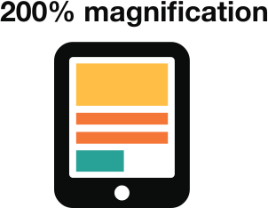
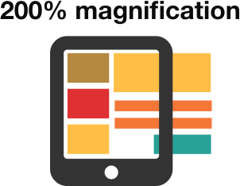
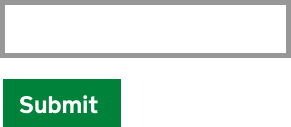
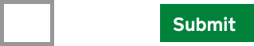
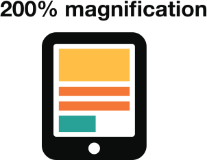
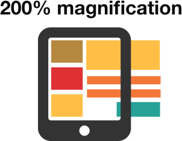
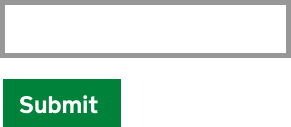
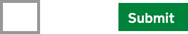

Making the default appearance of text easy to read will mean that people with visual impairments can take more in more quickly, particularly if assistive technology is not available.
Do publish all information on web pages Don't bury information in downloadsAssistive technologies can HTML is the most accessible format because it can be and doesn’t require extra steps or technology to open.
Do use a combination of colour, shapes and text Don't only use colour to convey meaning Do follow a linear, logical layout

Don't spread content all over a page

Do put buttons and notifications in context

Don't separate actions from their context

Do follow a linear, logical layout

Don't spread content all over a page

Do put buttons and notifications in context

Don't separate actions from their context
